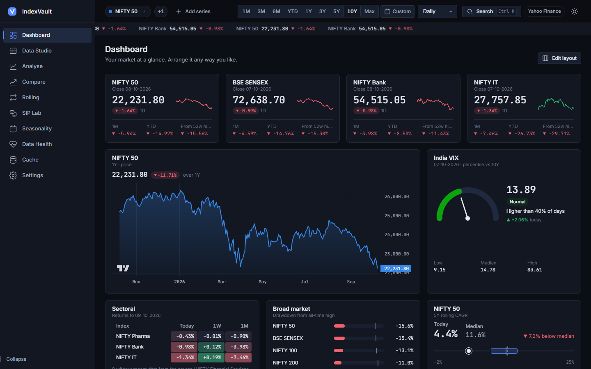
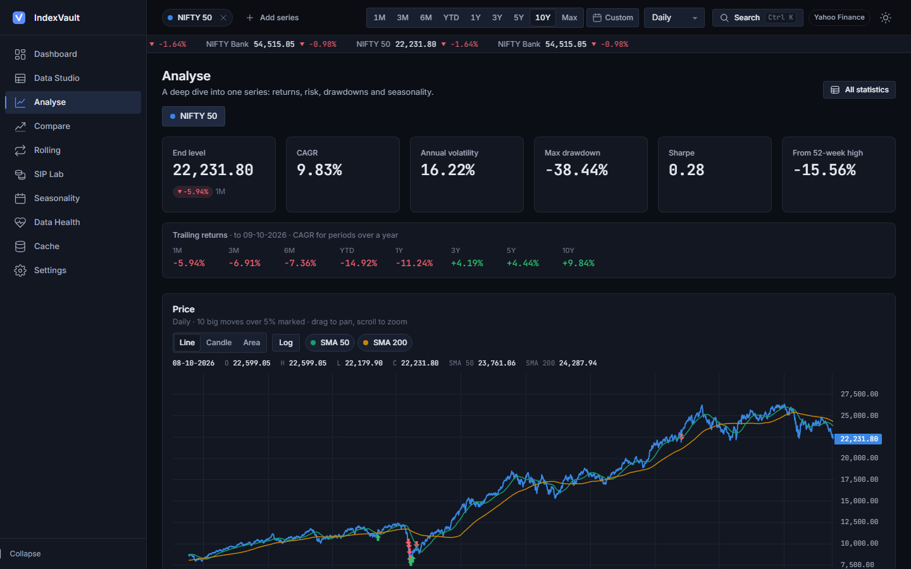
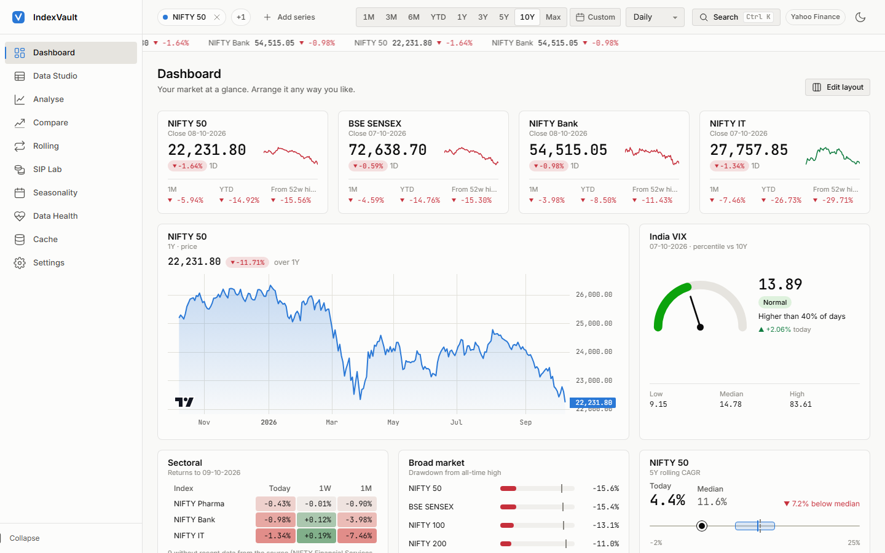
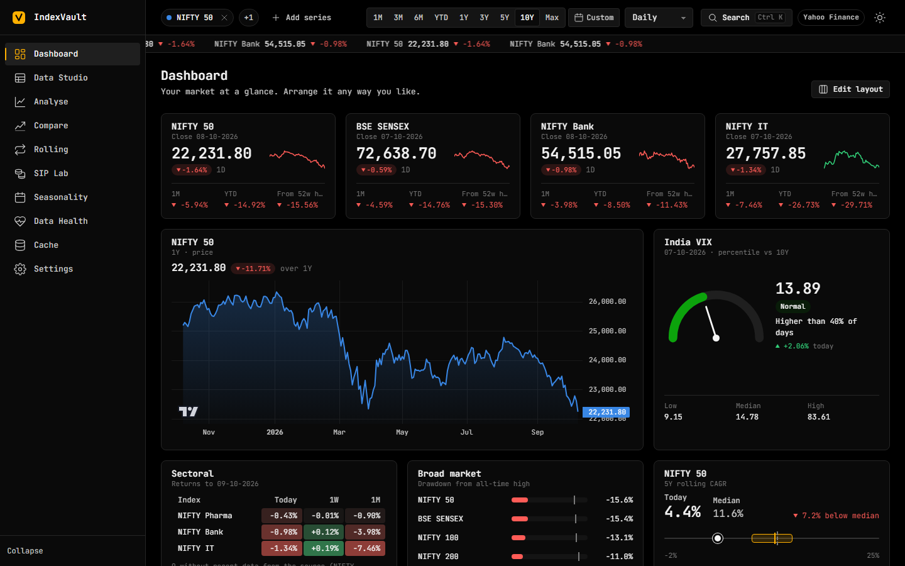
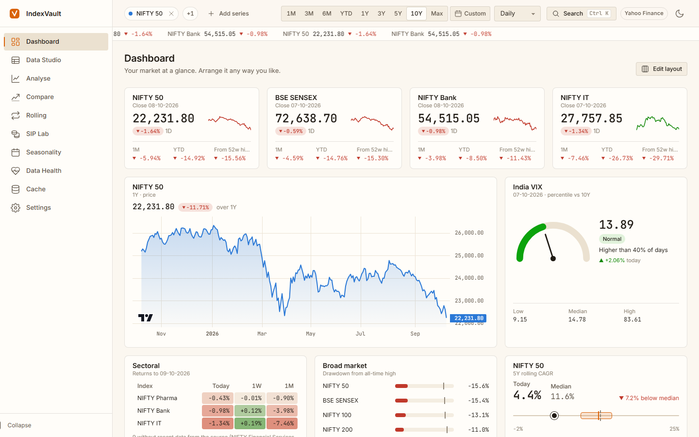
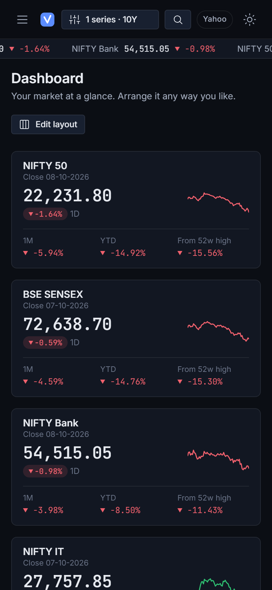
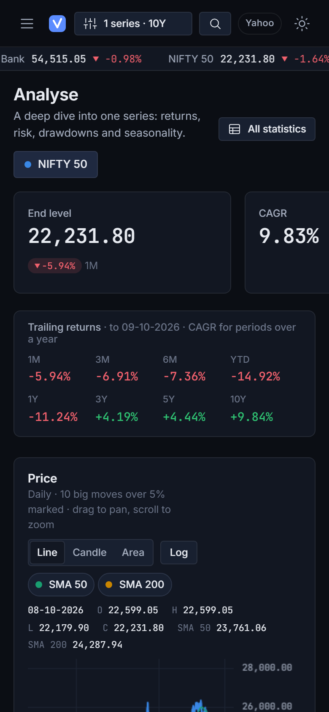

Indian market research, on your own computer
IndexVault downloads NIFTY, SENSEX, sectoral indices and India VIX, keeps them in a local cache, and turns them into research-grade tables, charts and exports. Every default, number and colour is yours to change.
NIFTY 50SENSEXNIFTY BankNIFTY IT India VIX+ 30 more, or any Yahoo ticker

Everything a research note needs
Pick your series, range and frequency once in the top bar; every page uses them, and every view is a shareable link.
Dashboard
A widget grid you arrange yourself: snapshots, mini charts, sector heatmap, VIX gauge, drawdowns, notes.
Data Studio
OHLCV at any frequency with derived columns, exported to Excel, CSV, zip or JSON. Save your export presets.
Analyse
KPIs, trailing returns, price with SMAs and big moves, drawdowns, monthly heatmap, distribution, rolling volatility.
Compare
Growth of 100, metrics with beta, correlation matrix, risk-vs-return, relative strength, rolling correlation.
Rolling returns
Every holding period of the same length, and how often it beat your target, in plain English.
SIP Lab
Monthly SIPs with step-ups and top-ups, XIRR, lump-sum comparison and start-date sensitivity.
Seasonality
Month-of-year and weekday patterns, with an honest warning about how noisy they are.
Data Health
Gaps, stale prices, broken OHLC bars, duplicates and big moves, before you trust a series.
Cache
What's downloaded and how fresh it is, one-click updates, and a ticker health check.
Settings
Every setting editable: four themes, your own themes and colour-blind-checked palettes, shortcuts, backup.
- Indian conventions₹, lakh/crore and DD-MM-YYYY by default, all switchable.
- Private by designRuns on localhost. Your settings and data never leave your machine.
- AccessibleFull keyboard control, focus rings, reduced motion, a table view for every chart.
- FastLocal cache, server-side memoisation, LTTB downsampling for long series.
A quick tour
Real screenshots of the app running on live Yahoo Finance data.

Four themes, or make your own
Each theme has a partner in the other mode. Change any colour token and save it as your own theme; chart palettes are checked for colour-blind separation as you edit.







Works on your phone too
Run it on your computer and open it from your phone's browser on the same Wi-Fi.


Get started
All you need is Python 3.11 or newer. The chart libraries and fonts come with the code; there's no build step.
git clone https://github.com/Samarth5704/indexvault.git cd indexvault\backend py -m venv .venv .venv\Scripts\python -m pip install -r requirements.lock .venv\Scripts\python -m uvicorn api.main:app --port 8000
git clone https://github.com/Samarth5704/indexvault.git cd indexvault/backend python3 -m venv .venv .venv/bin/python -m pip install -r requirements.lock .venv/bin/python -m uvicorn api.main:app --port 8000
Then open http://localhost:8000. No internet? Switch the source to Demo for synthetic data. Prefer notebooks? The core is a plain Python library and a small CLI; see the README.
Data notes
- Price indices, not total returnYahoo's index levels exclude dividends; total return is typically about 1–1.5% a year higher.
- Unofficial sourceYahoo Finance tickers can change or lose history. The app flags missing data and has a ticker health check.
- Personal research onlyMarket data comes from Yahoo Finance via yfinance and is subject to Yahoo's terms.
- Not investment advicePast returns, rolling statistics and seasonality don't predict future results.
Ready to dig in?
Clone it, run it, make it yours. Issues and ideas are welcome on GitHub.